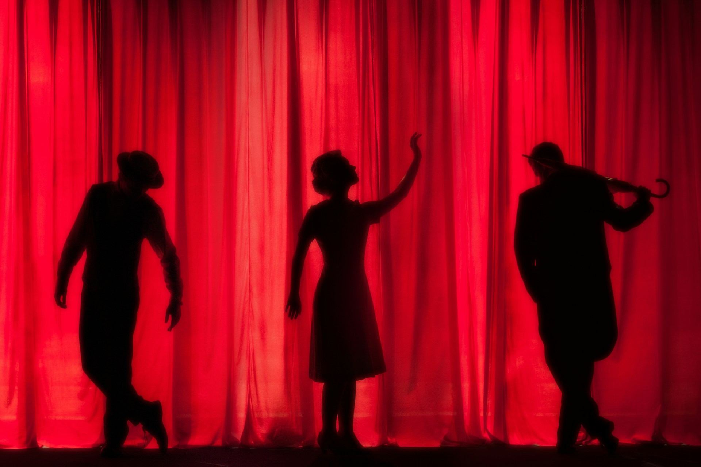
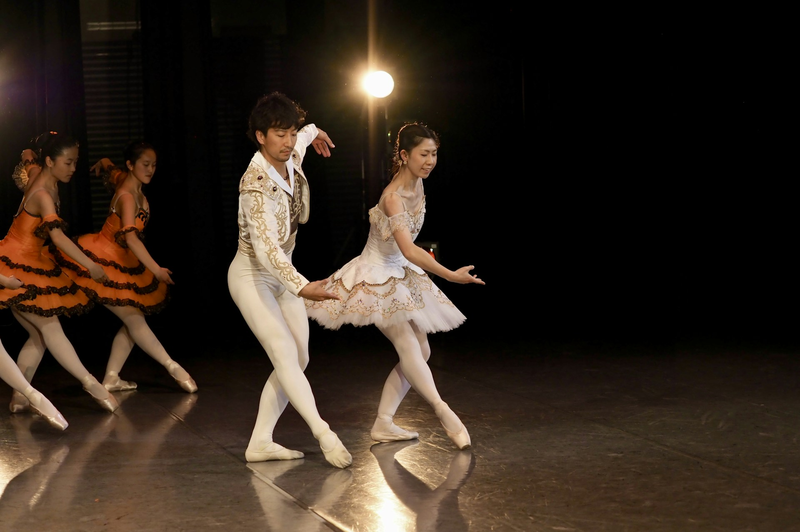
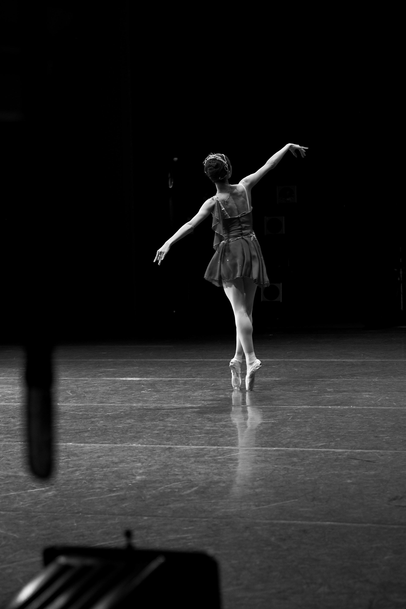
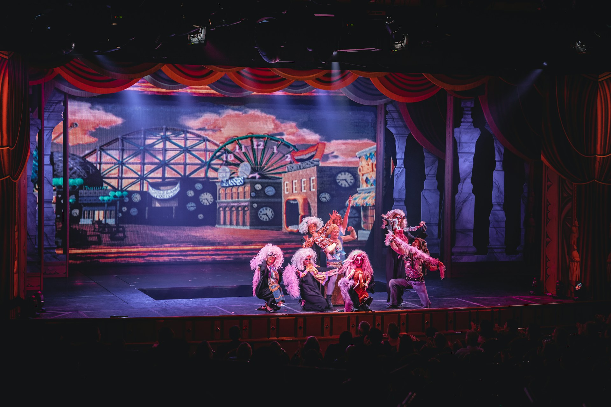
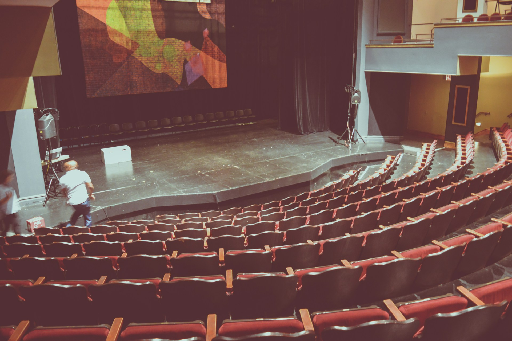
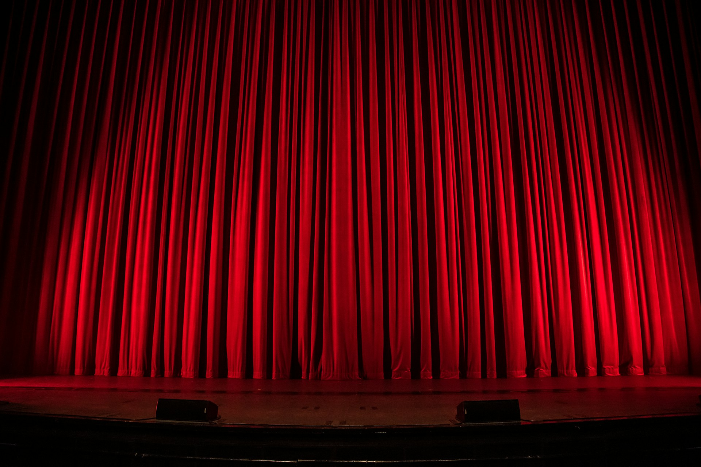
OPEN STAGE(S)
Stages for Inclusion
OPENSTAGE(S)
Stage(s) for Inclusion
Duración: 12 meses
Misión Principal: Empoderar a los jóvenes, tanto con como sin discapacidades, a través de
actividades creativas y culturales.
Destinatarios Directos: Jóvenes de entre 16 y 30 años, con y sin discapacidad.
Destinatarios Indirectos: Formadores juveniles, familias de los jóvenes, comunidades locales y
el sector juvenil y cultural en Europa.

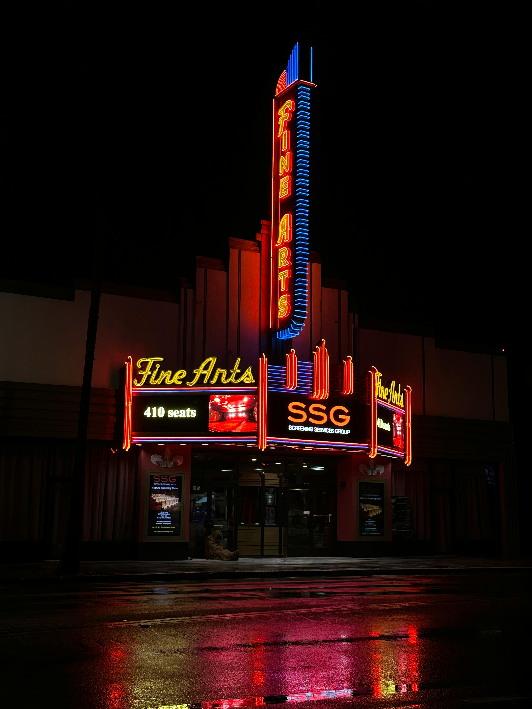
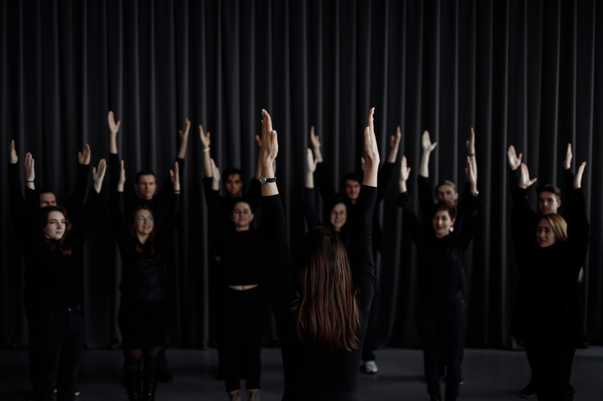

Objetivos
- Promover la inclusión activa mediante talleres creativos y teatrales en los que participen al menos 80 personas, garantizando que un mínimo del 30% sean jóvenes con discapacidad.
- Desarrollar metodologías digitales inclusivas mediante la formación de al menos ocho trabajadores juveniles (dos por organización).
- Crear un conjunto de herramientas digitales que contenga diez buenas prácticas transferibles.
- Empoderar a los jóvenes para participar a nivel local y europeo mediante la producción de un cortometraje que se presentará en el Festival de Cine Social Artelesia y en línea.
Prácticas Ecológicas
- Reuniones y coordinación en línea para reducir emisiones, limitando los viajes a eventos internacionales.
- Uso de materiales reciclados, sedes ecológicas y prioridad a la difusión digital sobre impresiones físicas en talleres locales.
Equipo
- Libero Teatro: Taller local sobre teatro inclusivo y actuación.
- Sinergie: Taller de digitalización inclusiva, gestión y evaluación, plan de sostenibilidad.
- Barrio de Oportunidades (Badeo): Taller de cinefórum inclusivo, gestión de riesgos, sostenibilidad y feedback.
- Teatro Para Tod@s: Taller de teatro inclusivo e improvisación.
Nuestros
Partners
Una red transnacional de cuatro organizaciones comprometidas con la inclusión y la excelencia artística en la escena europea.
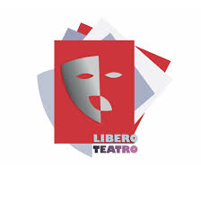
Libero Teatro
Dirección Artística
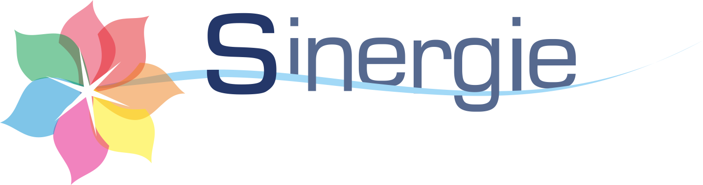
Sinergie
Inclusión Social & Cultura
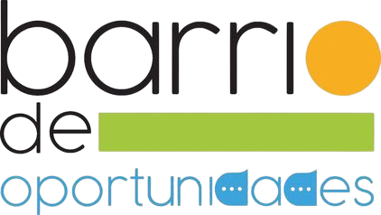
Barrio de Oportunidades
Centro Erasmus+, Sevilla
.jpg)
Teatro Para Tod@s
Teatro Inclusivo & Participación
Stages & Actividades
Gestión y Coordinación
Reuniones de coordinación periódicas en línea cada tres meses, uso de Google Drive y WhatsApp para la comunicación.
Habilidades digitales
Lanzamiento de un "Online Creative Hub" accesible tras el proyecto. Producción del cortometraje que documentará los talleres. Creación de metodologías digitales transferibles en el último mes.
Inclusión física
Cada organización impartirá un taller local para entre 15 y 20 jóvenes. Taller Internacional en Sevilla con 28 participantes para crear representaciones artísticas inclusivas y diálogo intercultural.
Actividad internacional
En octubre, viaje a Benevento, Italia, para asistir al Festival de Cine Social Artelesia, presentar el cortometraje y organizar un cine-foro inclusivo.
Difusión y Sostenibilidad
Dos eventos locales de difusión final en Nápoles y Sevilla (50-100 participantes cada uno). Distribución de un kit de buenas prácticas con al menos 70 descargas.
THE STAGE
IS YOURS.
Únete al proyecto
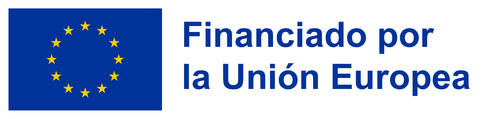
Proyecto cofinanciado por la Unión Europea a través del programa Creative Europe 2024–2026. Los puntos de vista y opiniones expresados son únicamente los del autor o autores y no reflejan necesariamente los de la Unión Europea ni los de la Agencia Ejecutiva Europea de Educación y Cultura.